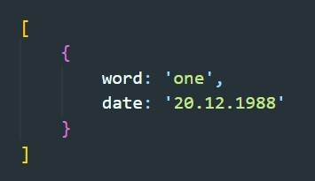
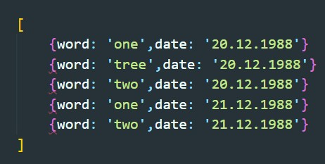
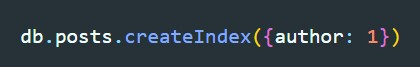
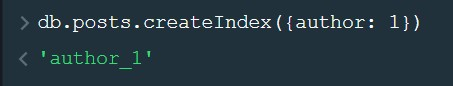
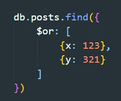
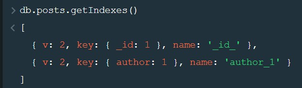
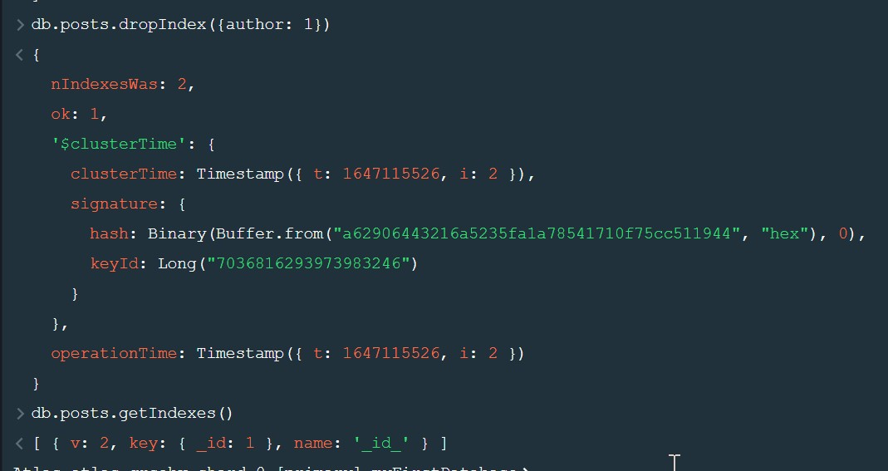

Что бы понять что такое индексы в базе данных, нужно представить себе справочник слов. Каждое слово имеет ряд каких-то свойств, например год добавления слова в справочник, количество букв и т.д. Изначально слова отсортированы и найти нужное слово не вызывает у нас особых сложностей. Но что если нам надо найти в справочнике все слова, которые добавлены в справочник в 2020 году? Для того что бы найти такие слова нам придется просмотреть абсолютно все слова и выделить те которые нам нужны. Индекс в базе данных - это некий указатель по определенному свойству. В нашем примере набором индексов может служить указатель в конце книги, в котором сказано что в таком-то году были добавлены вот такие слова. И в рамках этого индекса слова будут отсортированы. Т.е индекс хранит все свои значения в отсортированном порядке, что значительно ускоряет поиск.
Допустим у нас есть коллекция с вот таким содержимым документов:
Допустим мы создадим инлексы для поля date, в таком случае при поиске по полу date для базы данные будут в таком порядке
Изначально в коллекции свойство _id является индексом.
Создание индекса происходит с помощью метода createIndex
Результат выполнения в mongo shell
На данный момент MongoDB может использовать только по одному индексу на запрос. Т.е. если вы создадите один индекс { x: 1 } и еще один индекс { y: 1 }, а затем выполните запрос для { x: 123, y: 321 }, MongoDB будет использовать один из созданных вами индексов, но не оба. Исключением из правила - оператор $or. $or может использовать по одному индексу на каждый оператор, поскольку он выполняет два запроса, а затем объединяет результаты:
Для получения списка инлексов используется метод getIndexes
Для удаления индекса используется метод dropIndex
